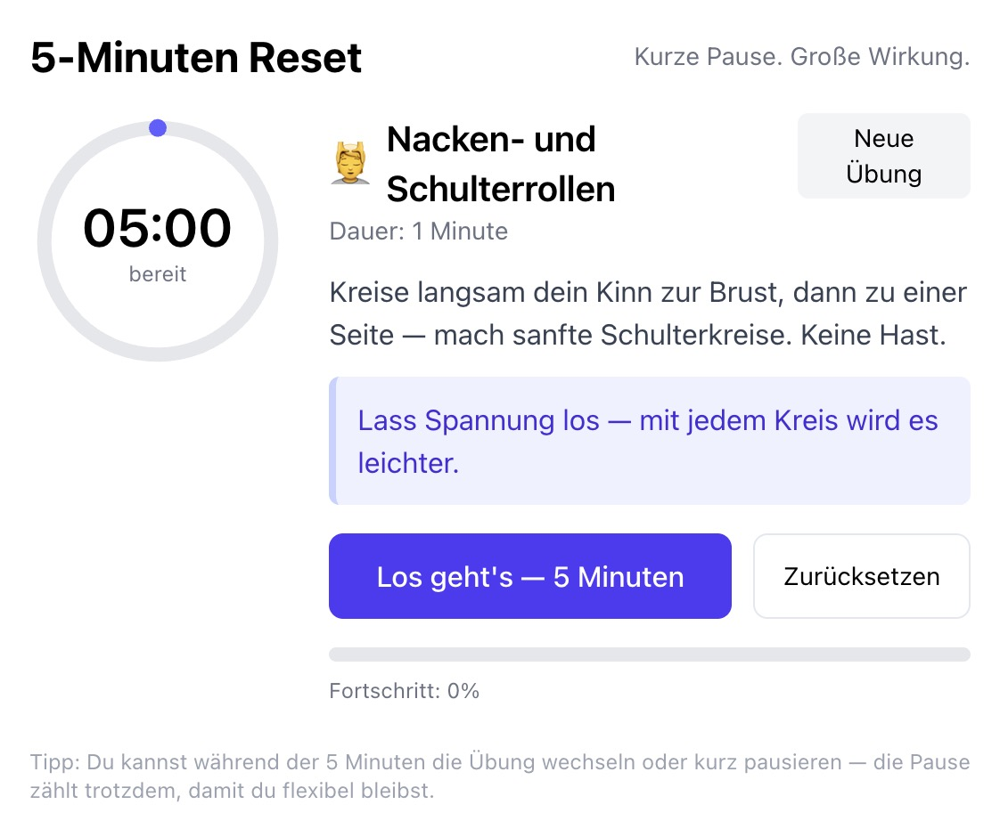
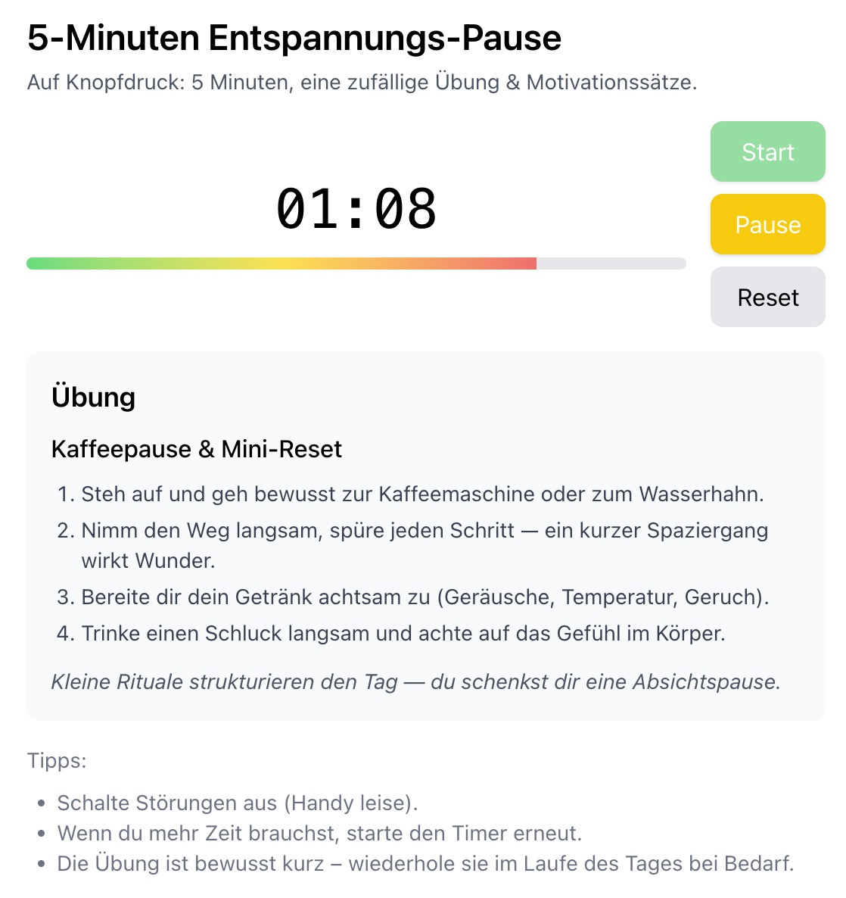

Popup blockiert - bitte mit S die Speaker View öffnen.
KI Coding Tools
Vibe Coding & AI Assisted Engineering
Ein Überblick über aktuelle Vorgehensweisen und Werkzeuge
Erik Behrends · DHBW Lörrach
Juni 2021: GitHub Copilot erscheint als
technical preview.
November 2022: ChatGPT wird veröffentlicht.
Januar 2023: „The hottest new programming language is English.“
(Andrej Karpathy,
Quelle)
Februar 2025: Anthropic stellt Claude Code vor, „Agentic Coding“
verbreitet sich rasant.
Ende 2025: Opus 4.5 (Anthropic) und GPT-5.2 (OpenAI) mit deutlichen
Verbesserungen für Coding-Agents
There's a new kind of coding I call
"vibe coding", where you fully give in to the
vibes […] and forget that the code even exists.
[…]
I'm building a project or webapp, but it's
not really coding - I just see stuff, say stuff,
run stuff, and copy paste stuff, and it mostly works.
Bau eine App, die per Knopfdruck 5 Minuten rückwärts zählt und
zufällig eine Aktivität zur Entspannung zeigt. Beispiele: Atemübung,
Strecken, Visualisierung, Kaffee holen, usw. Denk dir passende
Übungen aus. Mit motivierenden Texten!


„One Shot“-Ergebnisse des Prompts auf der vorigen Folie